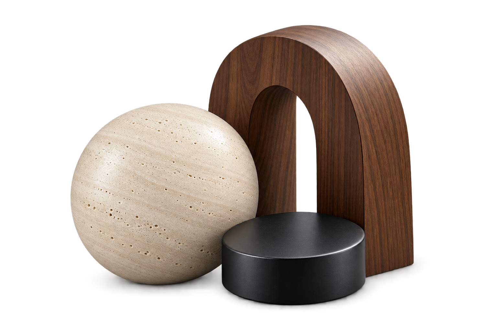
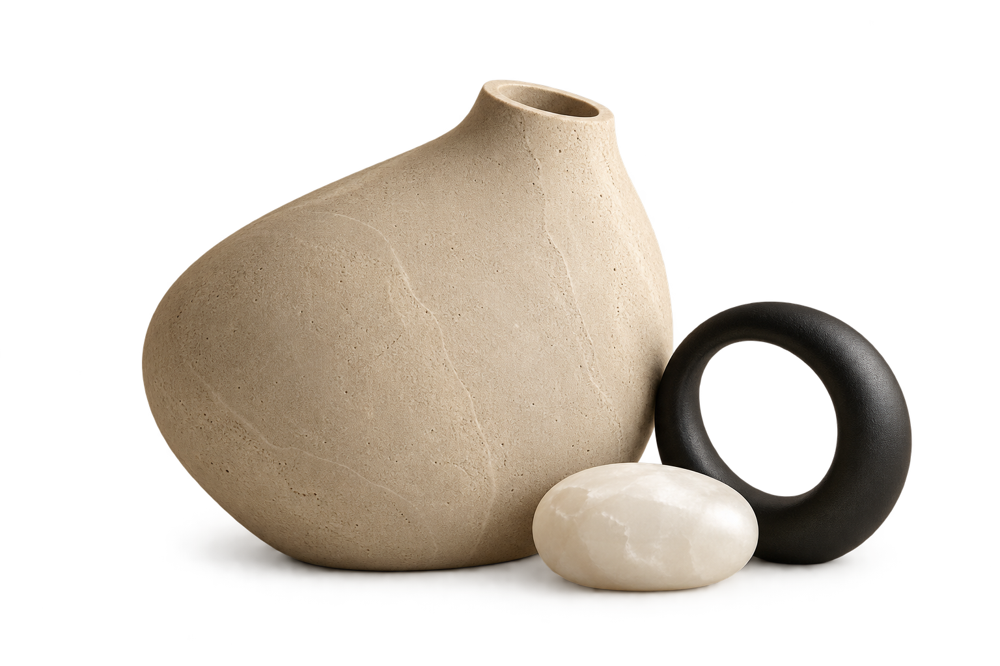
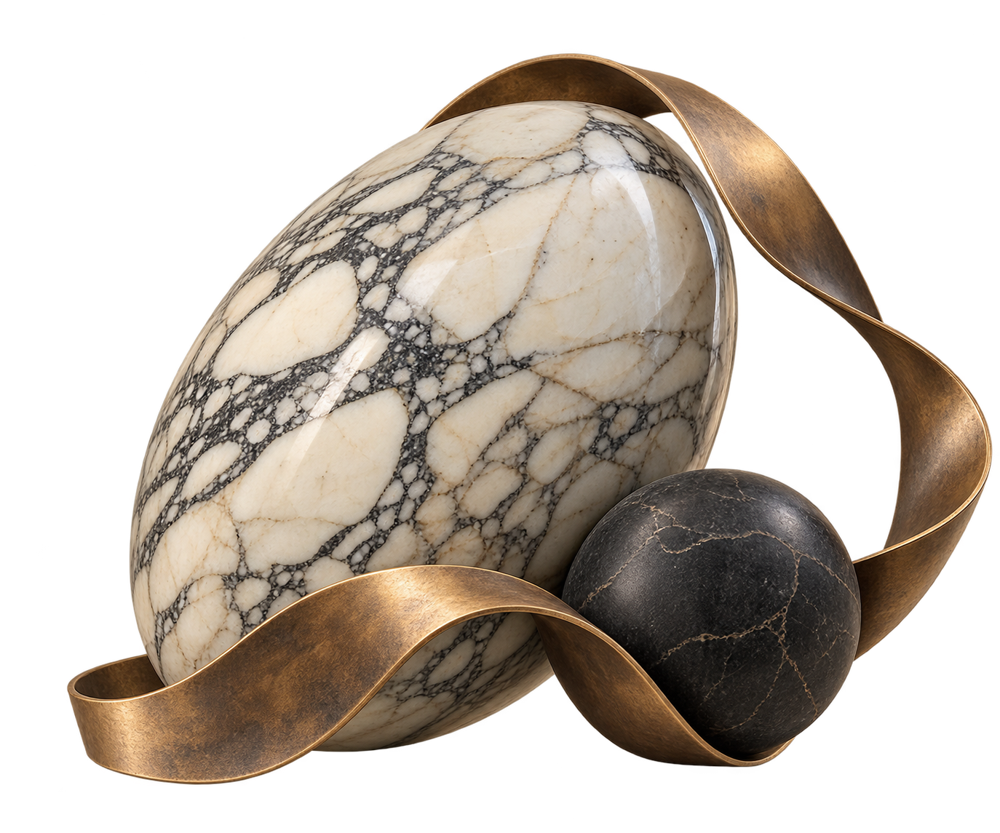

STONE / SPACE / CRAFT
שיש כפר יאסיף
מחקר עיצוב / 01
חומר בתנועה.

STONE / SPACE / CRAFT
שיש כפר יאסיף
מחקר עיצוב / 02
שקט מעוגל.

STONE / SPACE / CRAFT
שיש כפר יאסיף
מחקר עיצוב / 03
ניגוד עם נוכחות.
